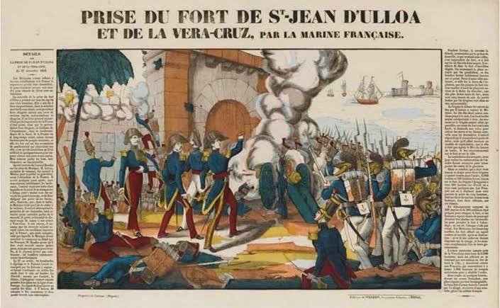

Conciencia Histórica II

Esta línea del tiempo explica, en orden cronológico, tres conflictos principales: la Primera Intervención Francesa (1838-1839), la Intervención Norteamericana (1846-1848) y la Segunda Intervención Francesa (1862-1867).
Ail Canto Linda Jaquelin
Cervantes Alcocer Alondra Guadalupe
Geronimo Tuz Aremy Jaquelin
Puc Mena Eunice Noemi
Tolosa Alvarado Vanessa